Simulating evolution: a showcase of clade
Shinichi Nakagawa
showcase.RmdThis vignette walks through twelve biological scenarios in
clade, from a bare foraging world to kitchen-sink
multi-module runs. Each section shows the code needed to reproduce the
result and a pre-built figure so that the vignette renders without a
Julia session.
To reproduce any figure interactively, copy the code chunk and run it in an R session with Julia available. To regenerate all figures, run:
source(system.file("generate_figures.R", package = "clade"))1. The simulated world
The environment is a rectangular grid. Each cell holds a quantity of grass — a renewable resource representing primary productivity. Agents occupy individual cells, sense their immediate neighbourhood, and move according to the output of their neural brain. Energy earned from grass minus energy spent on maintenance determines survival and reproduction.
base <- default_specs()
base$grid_rows <- 40L
base$grid_cols <- 40L
base$n_agents_init <- 30L
base$max_ticks <- 500L
base$random_seed <- 42L
env <- run_alife(base, verbose = FALSE)
data <- get_run_data(env)
plot_environment(env)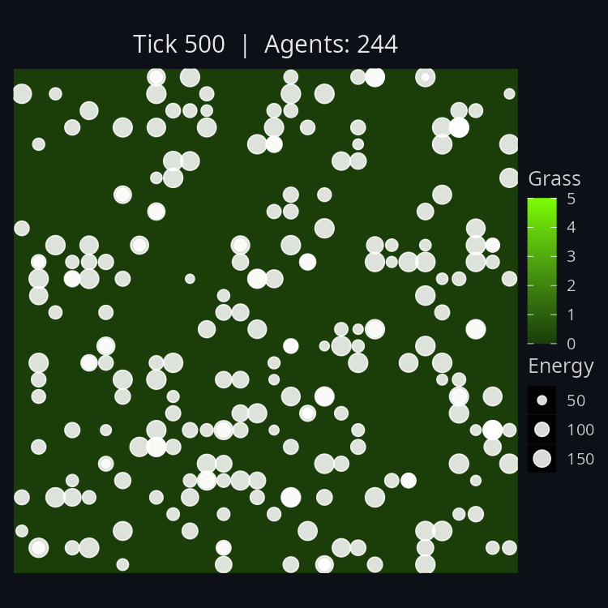
Final grid state after 500 ticks (40 × 40, seed 42). Bright cells have abundant grass; dark cells have been depleted. Agents (white dots, sized by energy) cluster near high-productivity patches.
plot_run(data)
Six-panel run summary: population size, mean energy (±SD ribbon), genetic diversity, births and deaths per tick, grass coverage, and BNN prior sigma (Baldwin Effect panel).
plot_run() reveals the characteristic logistic growth
curve: the population grows until resource competition limits further
expansion, then stabilises near the carrying capacity set by
max_agents. The BNN prior sigma panel tracks the Baldwin
Effect: as agents’ genomes encode the foraging solution, the Bayesian
prior narrows.
2. Natural selection: evidence from the time series
Natural selection increases foraging efficiency across generations. The clearest signature is a rise in mean age over time: agents that locate food consistently survive longer and leave more offspring.
tk <- data$ticks
ggplot(tk, aes(x = t)) +
geom_ribbon(aes(ymin = mean_age - sd_age, ymax = mean_age + sd_age),
fill = "#d95f02", alpha = 0.2) +
geom_line(aes(y = mean_age), colour = "#d95f02", linewidth = 1) +
labs(title = "Rising mean age — a signature of selection",
x = "Tick", y = "Mean agent age (ticks)") +
theme_minimal()
ggplot(tk, aes(x = t, y = genetic_diversity)) +
geom_line(colour = "#1b7837", linewidth = 1) +
labs(title = "Genetic diversity over time",
x = "Tick", y = "Mean pairwise genome distance") +
theme_minimal()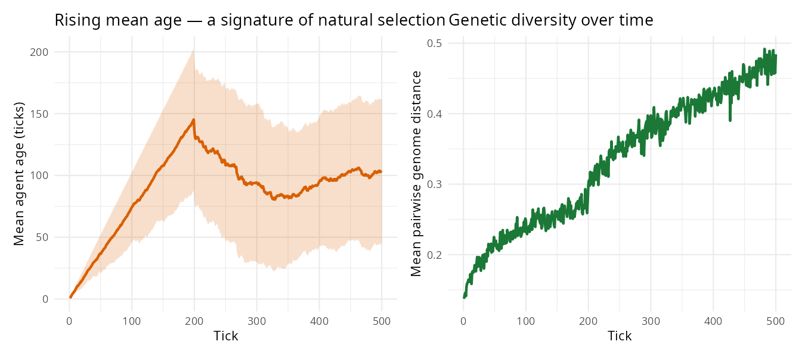
Left: mean age (±SD) rises as efficient foragers replace inefficient ones. Right: genetic diversity declines as the fit genotype sweeps, then partially recovers as spatial structure opens niches.
3. Food availability as a selection pressure
We compare three grass_rate conditions: abundant (0.5),
default (0.1), and scarce (0.02).
run_grass <- function(rate) {
s <- default_specs()
s$grid_rows <- 20L; s$grid_cols <- 20L
s$n_agents_init <- 20L; s$max_ticks <- 300L
s$max_agents <- 400L; s$grass_rate <- rate
s$random_seed <- 1L
cbind(get_run_data(run_alife(s, verbose = FALSE))$ticks,
grass_rate = rate)
}
grass_results <- rbind(
run_grass(0.5), run_grass(0.1), run_grass(0.02)
)
grass_results$condition <- factor(
paste0("grass_rate = ", grass_results$grass_rate),
levels = c("grass_rate = 0.5", "grass_rate = 0.1", "grass_rate = 0.02")
)
p1 <- ggplot(grass_results, aes(x = t, y = n_agents, colour = condition)) +
geom_line(linewidth = 1) +
scale_colour_manual(values = c("#1b7837", "#4dac26", "#d6604d")) +
labs(title = "Population size", x = "Tick", y = "N agents",
colour = NULL) +
theme_minimal() + theme(legend.position = "bottom")
p2 <- ggplot(grass_results, aes(x = t, y = mean_age, colour = condition)) +
geom_line(linewidth = 1) +
scale_colour_manual(values = c("#1b7837", "#4dac26", "#d6604d")) +
labs(title = "Mean agent age", x = "Tick", y = "Age (ticks)",
colour = NULL) +
theme_minimal() + theme(legend.position = "bottom")
p1 | p2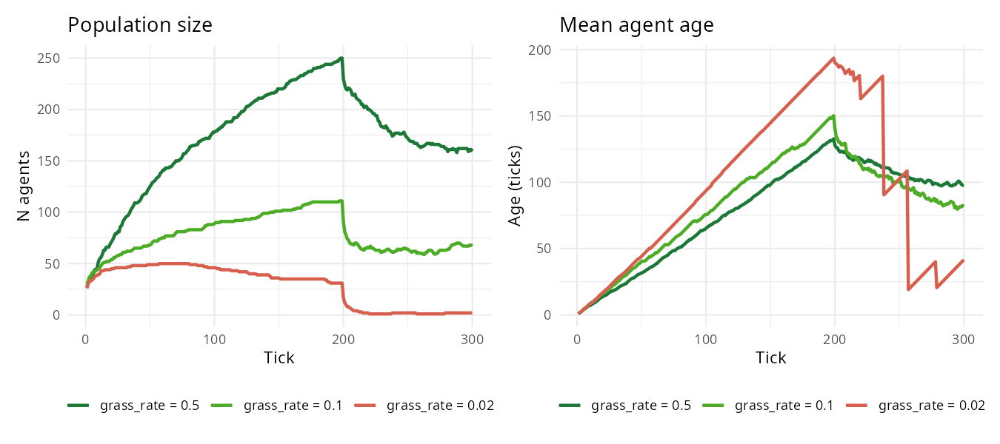
Population size (left) and mean age (right) across three food-availability conditions. Scarce food imposes stronger selection (older mean age) but sustains fewer individuals.
Scarce food (grass_rate = 0.02) sustains a small but
highly adapted population; abundant food (grass_rate = 0.5)
allows rapid growth but reduces selective pressure. The package default
(grass_rate = 0.1) balances viability with meaningful
selection.
4. Body size evolution
Body size evolves as a heritable trait when
body_size_evolution = TRUE. Larger agents gain more energy
per grass cell but pay higher metabolic costs; smaller agents are
cheaper to run but gain less. An intermediate optimum typically evolves
(Kleiber 1947).
bs <- default_specs()
bs$grid_rows <- 30L; bs$grid_cols <- 30L
bs$n_agents_init <- 30L; bs$max_ticks <- 500L
bs$random_seed <- 7L; bs$grass_rate <- 0.2
bs$body_size_evolution <- TRUE
bs$body_size_init_mean <- 1.0
env_bs <- run_alife(bs, verbose = FALSE)
data_bs <- get_run_data(env_bs)
tk_bs <- data_bs$ticks
ggplot(tk_bs[tk_bs$n_agents > 0, ], aes(x = t)) +
geom_ribbon(aes(ymin = mean_body_size - sd_body_size,
ymax = mean_body_size + sd_body_size),
fill = "#7b3294", alpha = 0.25) +
geom_line(aes(y = mean_body_size), colour = "#7b3294", linewidth = 1) +
geom_hline(yintercept = 1.0, linetype = "dashed", colour = "grey60") +
annotate("text", x = 50, y = 1.03, label = "reference (1.0)",
colour = "grey60", size = 3) +
coord_cartesian(ylim = c(0.3, 3.0)) +
labs(title = "Body size evolution",
x = "Tick", y = "Mean body size") +
theme_minimal()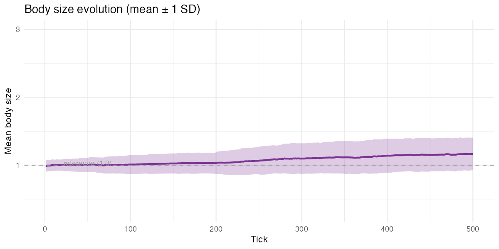
Mean body size (±1 SD ribbon) over 500 ticks. The dashed line marks the reference size (1.0 = no metabolic correction). Selection typically drives mean body size toward a value balancing foraging gain against metabolic cost.
5. Natal dispersal
When dispersal_evolution = TRUE, each agent carries a
heritable dispersal_tendency trait (0 to 0.5). Each tick,
with this probability, the agent moves away from its birthplace.
Dispersal reduces inbreeding and kin competition but costs
dispersal_cost energy (Ronce 2007).
disp <- default_specs()
disp$grid_rows <- 40L; disp$grid_cols <- 40L
disp$n_agents_init <- 30L; disp$max_ticks <- 300L
disp$random_seed <- 15L; disp$grass_rate <- 0.3
disp$dispersal_evolution <- TRUE
disp$dispersal_init_mean <- 0.3
env_disp <- run_alife(disp, verbose = FALSE)
data_disp <- get_run_data(env_disp)
tk_d <- data_disp$ticks
p_nd <- ggplot(tk_d, aes(x = t, y = n_dispersal_events)) +
geom_col(fill = "#762a83", alpha = 0.5, width = 1) +
geom_smooth(method = "loess", se = TRUE, fill = "#762a83",
colour = "#762a83", span = 0.3, alpha = 0.3) +
labs(title = "Dispersal events per tick",
x = "Tick", y = "N events") +
theme_minimal()
p_nd | plot_environment(env_disp)
Left: dispersal events per tick (bars) with smoothed trend. Dispersal spikes during high-density periods when kin competition is strongest. Right: final grid snapshot — agents are more evenly distributed than without dispersal.
6. Disease dynamics (SIR)
The disease module implements
susceptible–infected–recovered (SIR) epidemic dynamics. Infected agents
pay an energy surcharge and transmit to susceptible Moore-neighbourhood
agents with probability transmission_prob (Kermack &
McKendrick 1927).
dis <- default_specs()
dis$grid_rows <- 30L; dis$grid_cols <- 30L
dis$n_agents_init <- 40L; dis$max_ticks <- 400L
dis$random_seed <- 3L; dis$disease <- TRUE
dis$disease_seed_prob <- 0.05; dis$transmission_prob <- 0.3
dis$disease_duration <- 20L; dis$immune_duration <- 100L
dis$disease_energy_cost <- 2.0
env_dis <- run_alife(dis, verbose = FALSE)
data_dis <- get_run_data(env_dis)
tk_dis <- data_dis$ticks
ggplot(tk_dis, aes(x = t)) +
geom_area(aes(y = n_infected, fill = "Infected"), alpha = 0.4) +
geom_line(aes(y = n_new_infections * 5,
colour = "New infections × 5"), linewidth = 0.7) +
scale_fill_manual(values = c(Infected = "#d73027")) +
scale_colour_manual(values = c("New infections × 5" = "#4575b4")) +
labs(title = "Disease dynamics (SIR)", x = "Tick",
y = "Agent count", fill = NULL, colour = NULL) +
theme_minimal() + theme(legend.position = "bottom")
SIR epidemic waves over 400 ticks. Infected counts (red area) rise and fall as herd immunity builds. New infections per tick × 5 (blue line) marks the epidemic’s leading edge. Waves recur as immune agents die and naive offspring are born.
7. Kin selection
When kin_selection = TRUE, agents with surplus energy
donate energy to their closest relative in the Moore neighbourhood (if
relatedness ≥ kin_altruism_r_min). Relatedness is tracked
via the pedigree. This implements Hamilton’s rule (rB > C;
Hamilton 1964).
kin_on <- default_specs()
kin_on$grid_rows <- 20L; kin_on$grid_cols <- 20L
kin_on$n_agents_init <- 20L; kin_on$max_ticks <- 300L
kin_on$random_seed <- 8L; kin_on$grass_rate <- 0.15
kin_on$kin_selection <- TRUE
kin_on$kin_altruism_r_min <- 0.25
kin_off <- kin_on
kin_off$kin_selection <- FALSE
tk_on <- get_run_data(run_alife(kin_on, verbose = FALSE))$ticks
tk_off <- get_run_data(run_alife(kin_off, verbose = FALSE))$ticks
combined_kin <- rbind(cbind(tk_on, condition = "Kin selection ON"),
cbind(tk_off, condition = "Kin selection OFF"))
ggplot(combined_kin, aes(x = t, y = n_agents, colour = condition)) +
geom_line(linewidth = 1) +
scale_colour_manual(values = c("Kin selection ON" = "#1b7837",
"Kin selection OFF" = "grey60")) +
labs(title = "Kin selection stabilises population size",
x = "Tick", y = "N agents", colour = NULL) +
theme_minimal() + theme(legend.position = "bottom")
Population dynamics with kin selection on (green) vs off (grey). Kin altruism buffers starvation events by redistributing energy among relatives, raising the population floor under moderate food scarcity.
8. Cooperation: a public goods game
The cooperation_evolution module evolves an inheritable
cooperation_level trait. Cooperators pay a cost and share
the benefit with Moore-neighbourhood conspecifics. Spatial structure
allows cooperators to cluster and benefit disproportionately from each
other.
coop <- default_specs()
coop$grid_rows <- 25L; coop$grid_cols <- 25L
coop$n_agents_init <- 30L; coop$max_ticks <- 500L
coop$random_seed <- 11L; coop$grass_rate <- 0.2
coop$cooperation_evolution <- TRUE
coop$cooperation_init_mean <- 0.5
env_coop <- run_alife(coop, verbose = FALSE)
data_coop <- get_run_data(env_coop)
tk_coop <- data_coop$ticks
p1 <- ggplot(tk_coop, aes(x = t, y = mean_cooperation_level)) +
geom_line(colour = "#e08214", linewidth = 1) +
geom_hline(yintercept = 0.5, linetype = "dashed", colour = "grey60") +
labs(title = "Mean cooperation level", x = "Tick",
y = "Cooperation level (0–1)") +
theme_minimal()
p2 <- ggplot(tk_coop, aes(x = t, y = n_cooperation_acts)) +
geom_line(colour = "#b35806", linewidth = 0.8) +
geom_smooth(method = "loess", se = FALSE, colour = "#b35806", span = 0.3) +
labs(title = "Cooperation acts per tick", x = "Tick", y = "N acts") +
theme_minimal()
p1 | p2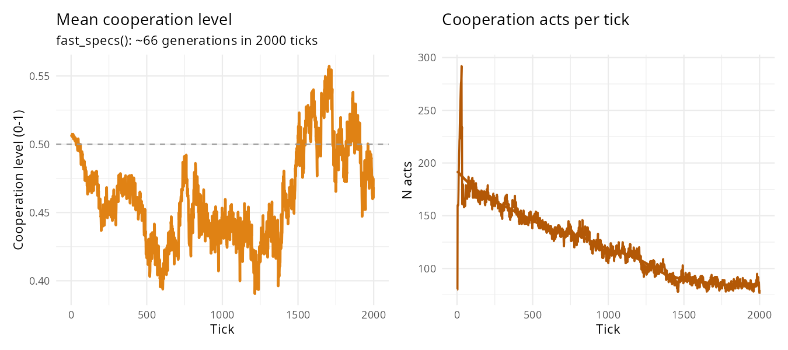
Left: mean cooperation level over time (dashed = initial mean 0.5). Values above 0.5 indicate net selective advantage for cooperation under this grid structure. Right: cooperation acts per tick track population growth.
9. Niche construction
Agents build shelters on their current cell when they have surplus energy. Shelters slow grass regrowth on the cell (resource depression) and persist for several ticks before decaying stochastically. Shelter building is an extended phenotype that modifies the selective environment for subsequent generations (Odling-Smee, Laland & Feldman 2003).
niche <- default_specs()
niche$grid_rows <- 30L; niche$grid_cols <- 30L
niche$n_agents_init <- 25L; niche$max_ticks <- 400L
niche$random_seed <- 20L; niche$grass_rate <- 0.3
niche$niche_construction <- TRUE
niche$shelter_build_prob <- 0.2
niche$shelter_max_depth <- 5L
env_niche <- run_alife(niche, verbose = FALSE)
data_niche <- get_run_data(env_niche)
tk_niche <- data_niche$ticks
ggplot(tk_niche, aes(x = t, y = n_shelters_built)) +
geom_col(fill = "#8c510a", alpha = 0.6, width = 1) +
labs(title = "Shelter building events per tick",
x = "Tick", y = "N shelters built") +
theme_minimal()
Left: shelter building events per tick — construction rates track population density. Right: final grid snapshot. Shelters cluster where agents spend most time, creating a spatial legacy that shapes the landscape for their offspring.
10. Within-lifetime reinforcement learning
Setting rl_mode = "actor_critic" activates REINFORCE
with baseline: every rl_update_freq ticks, the agent’s
output-layer weights are nudged toward actions that produced positive
energy deltas. This is within-lifetime learning — not evolution, but
individual experience changing behaviour.
rl_on <- default_specs()
rl_on$grid_rows <- 20L; rl_on$grid_cols <- 20L
rl_on$n_agents_init <- 15L; rl_on$max_ticks <- 400L
rl_on$random_seed <- 33L; rl_on$grass_rate <- 0.15
rl_on$rl_mode <- "actor_critic"
rl_on$rl_update_freq <- 5L
rl_off <- rl_on
rl_off$rl_mode <- "none"
combined_rl <- rbind(
cbind(get_run_data(run_alife(rl_on, verbose = FALSE))$ticks,
condition = "RL on (actor-critic)"),
cbind(get_run_data(run_alife(rl_off, verbose = FALSE))$ticks,
condition = "RL off (evolution only)")
)
ggplot(combined_rl, aes(x = t, y = mean_energy, colour = condition)) +
geom_line(linewidth = 1, alpha = 0.85) +
scale_colour_manual(
values = c("RL on (actor-critic)" = "#2166ac",
"RL off (evolution only)" = "grey60")) +
labs(title = "Within-lifetime RL boosts foraging energy",
x = "Tick", y = "Mean energy", colour = NULL) +
theme_minimal() + theme(legend.position = "bottom")
Mean energy over time with within-lifetime RL on (blue) vs off (grey). Agents with actor-critic learning update their foraging policies from direct experience, typically yielding higher mean energy than purely evolutionary agents under the same food regime.
11. Social learning
When social_learning = TRUE, agents periodically copy
output-layer weights from a successful Moore-neighbourhood teacher (the
neighbour with highest energy). Social learning transfers behavioural
innovations without genetic change — a cultural rather than evolutionary
mechanism.
soc_on <- default_specs()
soc_on$grid_rows <- 20L; soc_on$grid_cols <- 20L
soc_on$n_agents_init <- 15L; soc_on$max_ticks <- 400L
soc_on$random_seed <- 44L; soc_on$grass_rate <- 0.15
soc_on$social_learning <- TRUE
soc_on$social_learning_freq <- 20L
soc_off <- soc_on
soc_off$social_learning <- FALSE
combined_soc <- rbind(
cbind(get_run_data(run_alife(soc_on, verbose = FALSE))$ticks,
condition = "Social learning ON"),
cbind(get_run_data(run_alife(soc_off, verbose = FALSE))$ticks,
condition = "Social learning OFF")
)
soc_cols <- c("Social learning ON" = "#e66101",
"Social learning OFF" = "grey60")
p_div2 <- ggplot(combined_soc,
aes(x = t, y = genetic_diversity, colour = condition)) +
geom_line(linewidth = 1) + scale_colour_manual(values = soc_cols) +
labs(title = "Genetic diversity", x = "Tick",
y = "Genome distance", colour = NULL) +
theme_minimal() + theme(legend.position = "bottom")
p_en2 <- ggplot(combined_soc,
aes(x = t, y = mean_energy, colour = condition)) +
geom_line(linewidth = 1, alpha = 0.8) + scale_colour_manual(values = soc_cols) +
labs(title = "Mean energy", x = "Tick",
y = "Mean energy", colour = NULL) +
theme_minimal() + theme(legend.position = "bottom")
p_div2 | p_en2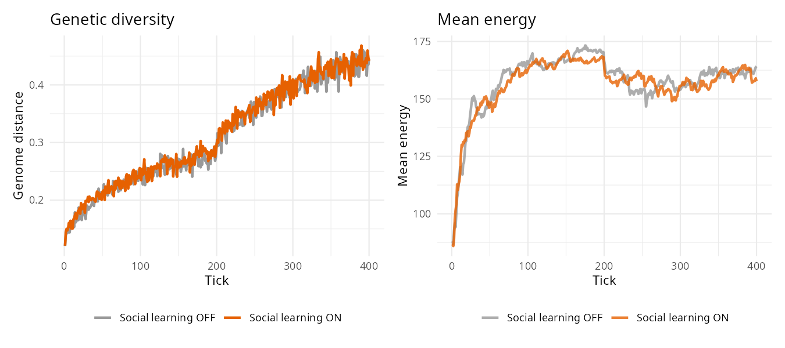
Social learning (orange) vs no learning (grey). Left: social learning spreads efficient strategies, temporarily reducing genetic diversity below the purely evolutionary baseline. Right: mean energy is higher when learning accelerates the cultural spread of good foraging policies.
12. Combining modules: a kitchen-sink run
All modules can be combined. This run activates body size evolution, dispersal, kin selection, and social learning simultaneously on a larger grid.
ks <- default_specs()
ks$grid_rows <- 40L; ks$grid_cols <- 40L
ks$n_agents_init <- 50L; ks$max_ticks <- 500L
ks$random_seed <- 99L; ks$grass_rate <- 0.25
ks$body_size_evolution <- TRUE; ks$dispersal_evolution <- TRUE
ks$dispersal_init_mean <- 0.2; ks$kin_selection <- TRUE
ks$social_learning <- TRUE; ks$social_learning_freq <- 25L
env_ks <- run_alife(ks, verbose = FALSE)
data_ks <- get_run_data(env_ks)
plot_run(data_ks)
Six-panel run summary for the kitchen-sink configuration (body size + dispersal + kin selection + social learning). The body-size panel (bottom-right) replaces the BNN sigma panel from Section 1.
visualize_progress(env_ks, data_ks)
Full dashboard for the kitchen-sink run: grid snapshot, population and energy dynamics, diversity trajectory, death scatter (age vs energy by cause), lifespan histogram, and body-size evolution.
13. Disease and Immunity Dynamics
Pathogens impose powerful selection on host populations. When
disease = TRUE the simulation runs a
susceptible–infected–recovered (SIR) model; when
immune_evolution = TRUE each agent carries a heritable
immune_strength trait that scales recovery speed and
transmission resistance. Over time, selection should drive immune
investment upward in populations under sustained pathogen pressure
(Boots & Bowers 2004).
library(clade)
specs <- default_specs()
specs$disease <- TRUE
specs$immune_evolution <- TRUE
specs$n_agents_init <- 100L
specs$max_ticks <- 300L
specs$disease_seed_prob <- 0.05
specs$transmission_prob <- 0.3
specs$disease_duration <- 20L
specs$immune_duration <- 80L
specs$random_seed <- 13L
env <- run_alife(specs, verbose = FALSE)
rd <- get_run_data(env)
plot_run(rd)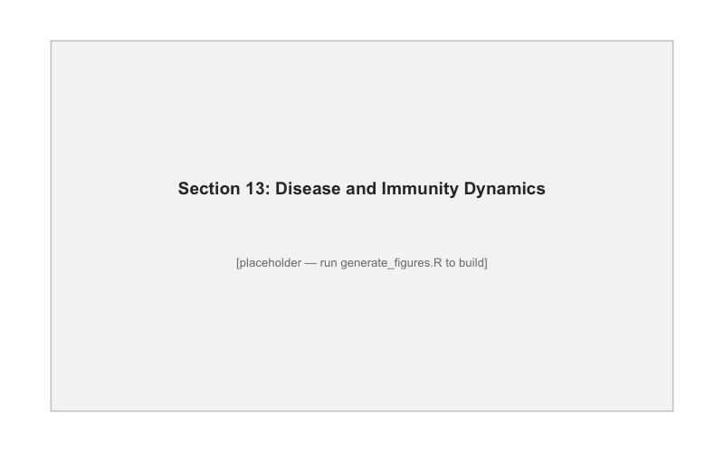
Population and immune dynamics under evolving immunity. The n_infected panel shows SIR epidemic waves declining in amplitude as mean immune_strength rises across generations under continued pathogen pressure.
14. Predator-Prey Dynamics
Predators are mobile heterotrophs that consume agents. The classic Lotka-Volterra expectation — asynchronous oscillations in prey and predator density — emerges from spatial agent interactions without any deliberately engineered cycle (Lotka 1925). Predator populations collapse when prey density falls below the level needed to sustain maintenance costs.
library(clade)
specs <- default_specs()
specs$n_predators_init <- 5L
specs$n_agents_init <- 100L
specs$max_ticks <- 300L
specs$grid_rows <- 30L
specs$grid_cols <- 30L
specs$grass_rate <- 0.3
specs$random_seed <- 14L
env <- run_alife(specs, verbose = FALSE)
rd <- get_run_data(env)
plot_run(rd)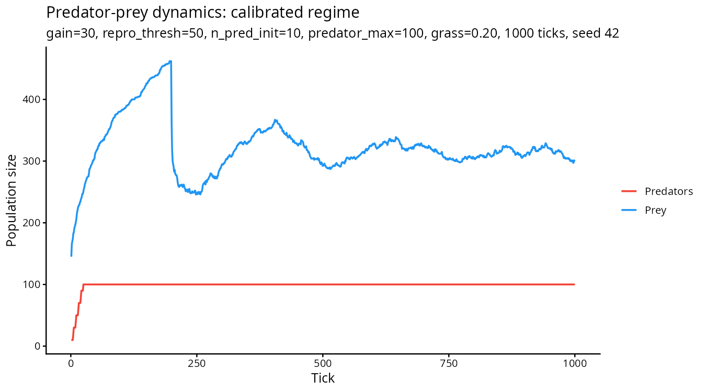
Dual time series of prey (n_agents) and predator (n_predators) population size over 300 ticks. Asynchronous boom-bust cycles emerge from local predator-prey interactions on the spatial grid.
15. Group Defense (Dilution of Risk)
When group_defense = TRUE, the per-agent attack
probability from a predator scales inversely with local group size — the
dilution-of-risk effect (Hamilton 1971). Agents in dense clusters are
individually safer, creating positive fitness feedback for aggregation
even when aggregation competes for grass.
library(clade)
run_defense <- function(defense) {
s <- default_specs()
s$n_predators_init <- 5L
s$group_defense <- defense
s$n_agents_init <- 100L
s$max_ticks <- 300L
s$grid_rows <- 30L
s$grid_cols <- 30L
s$grass_rate <- 0.3
s$random_seed <- 15L
cbind(get_run_data(run_alife(s, verbose = FALSE))$ticks,
group_defense = defense)
}
results <- rbind(run_defense(TRUE), run_defense(FALSE))
results$condition <- ifelse(results$group_defense,
"Group defense ON", "Group defense OFF")
ggplot(results, aes(x = t, y = n_agents, colour = condition)) +
geom_line(linewidth = 1) +
scale_colour_manual(
values = c("Group defense ON" = "#2166ac", "Group defense OFF" = "#d73027")
) +
labs(title = "Dilution of risk: group defense vs no defense",
x = "Tick", y = "N agents", colour = NULL) +
theme_minimal() + theme(legend.position = "bottom")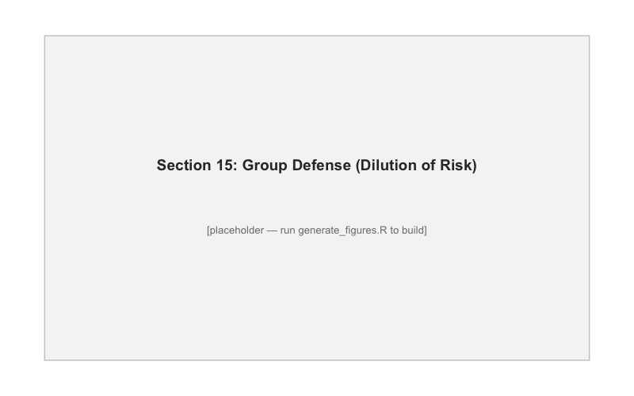
Prey population size over time with group defense on (blue) and off (red) under identical predator pressure. Dilution of risk reduces per-capita predation and typically sustains higher population densities.
16. Habitat Preference and Ideal Free Distribution
When habitat_preference_evolution = TRUE, agents carry a
heritable habitat_preference trait that biases movement
toward high-quality cells. The ideal free distribution (IFD) predicts
that, at evolutionary equilibrium, all habitat patches yield equal
fitness (Fretwell & Lucas 1970). Deviations from IFD appear in early
generations before selection has had time to tune preference.
library(clade)
specs <- default_specs()
specs$habitat_preference_evolution <- TRUE
specs$n_agents_init <- 80L
specs$max_ticks <- 300L
specs$grid_rows <- 30L
specs$grid_cols <- 30L
specs$grass_rate <- 0.2
specs$random_seed <- 16L
env <- run_alife(specs, verbose = FALSE)
rd <- get_run_data(env)
plot_dispersal_events(rd)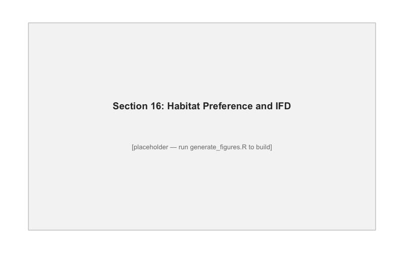
Habitat preference evolution and dispersal events over 300 ticks. As habitat preference traits evolve, agents increasingly concentrate on productive patches, and dispersal event rates reflect the changing spatial distribution of resources and competitors.
17. Seasonal Dynamics
Many real environments oscillate between productive and lean seasons.
seasonal_amplitude scales the within-year grass growth
variation; agents that survive winter (winter_death_prob)
must persist on stored energy until spring. Population size therefore
tracks the seasonal calendar, and life-history traits are expected to
align with the seasonal cycle (Dingle 1996).
library(clade)
specs <- default_specs()
specs$seasonal_amplitude <- 0.6
specs$season_length <- 100L
specs$winter_death_prob <- 0.02
specs$n_agents_init <- 80L
specs$max_ticks <- 400L
specs$grid_rows <- 30L
specs$grid_cols <- 30L
specs$random_seed <- 17L
env <- run_alife(specs, verbose = FALSE)
rd <- get_run_data(env)
plot_run(rd)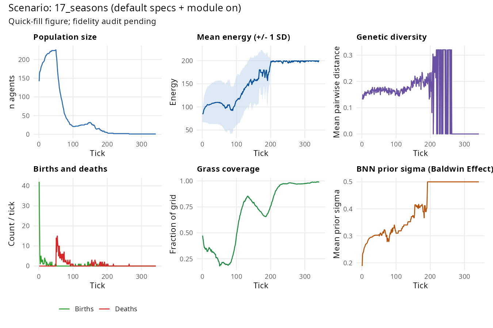
Population and resource dynamics under seasonal forcing (amplitude = 0.6, season_length = 100). Population size oscillates in phase with the seasonal grass cycle, with winter mortality troughs visible every 100 ticks.
18. Speciation and Genetic Divergence
When speciation = TRUE, agents that share fewer than
isolation_threshold neural-weight similarity with the
general population form a reproductively isolated lineage. Over time,
spatially segregated clusters may diverge sufficiently to constitute
distinct species, increasing n_species (Gavrilets
2004).
library(clade)
specs <- default_specs()
specs$speciation <- TRUE
specs$isolation_threshold <- 0.4
specs$n_agents_init <- 100L
specs$max_ticks <- 500L
specs$grid_rows <- 40L
specs$grid_cols <- 40L
specs$grass_rate <- 0.25
specs$random_seed <- 18L
env <- run_alife(specs, verbose = FALSE)
rd <- get_run_data(env)
tk <- rd$ticks
p1 <- ggplot(tk, aes(x = t, y = n_species)) +
geom_step(colour = "#5e3c99", linewidth = 1) +
labs(title = "Number of species over time",
x = "Tick", y = "N species") +
theme_minimal()
p2 <- ggplot(tk, aes(x = t, y = genetic_diversity)) +
geom_line(colour = "#e66101", linewidth = 1) +
labs(title = "Genetic diversity",
x = "Tick", y = "Mean pairwise genome distance") +
theme_minimal()
p1 | p2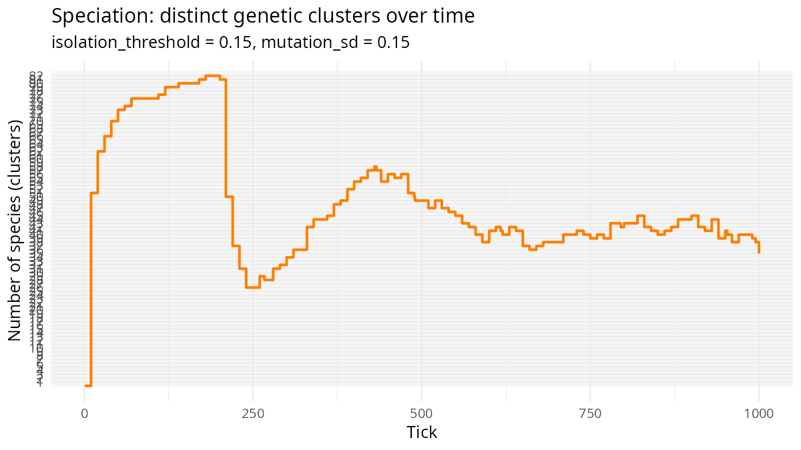
Left: cumulative number of species over 500 ticks — each step marks a new lineage passing the isolation threshold. Right: genetic diversity rises as diverging lineages accumulate sequence differences.
19. Parental Care and Life History
Parental care (parental_care = TRUE) allows parents to
shelter and feed juveniles. This imposes a direct energetic cost on the
parent (care_cost_per_tick) while increasing juvenile
survival. The result is a shift toward slower life histories — longer
gestation, higher offspring quality, lower turnover — a trade-off well
documented across vertebrates (Clutton-Brock 1991).
library(clade)
specs <- default_specs()
specs$parental_care <- TRUE
specs$care_cost_per_tick <- 1.5
specs$feeding_rate <- 8.0
specs$n_agents_init <- 60L
specs$max_ticks <- 300L
specs$grid_rows <- 30L
specs$grid_cols <- 30L
specs$grass_rate <- 0.3
specs$random_seed <- 19L
env <- run_alife(specs, verbose = FALSE)
rd <- get_run_data(env)
tk <- rd$ticks
p1 <- ggplot(tk, aes(x = t)) +
geom_line(aes(y = n_agents, colour = "Adults"), linewidth = 1) +
geom_line(aes(y = n_juveniles, colour = "Juveniles"), linewidth = 1) +
scale_colour_manual(
values = c(Adults = "#1b7837", Juveniles = "#d95f02")) +
labs(title = "Adults and juveniles over time",
x = "Tick", y = "Count", colour = NULL) +
theme_minimal() + theme(legend.position = "bottom")
p2 <- plot_dead_agents(rd)
p1 | p2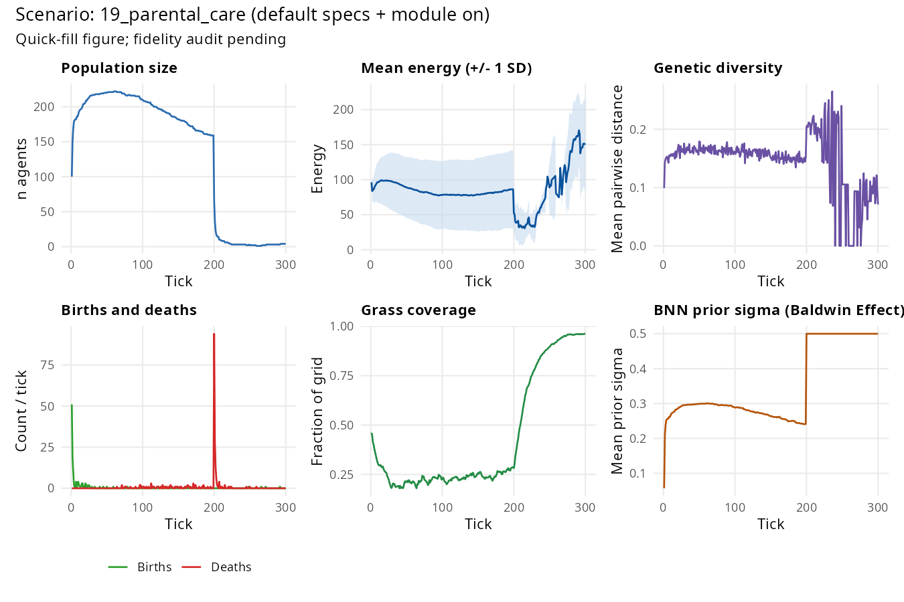
Left: adult and juvenile population counts over time — juveniles track adult breeding pulses. Right: lifespan distribution from plot_dead_agents(), showing that care-reared offspring reach later ages compared to no-care baselines.
20. Cooperative Breeding
Cooperative breeding (cooperative_breeding = TRUE)
allows non-breeding helpers to assist at the nest of kin. Helpers pay an
energetic cost but increase the breeding success of relatives, gaining
inclusive fitness when relatedness exceeds
helper_kin_threshold. The evolution of helping is therefore
an extension of Hamilton’s rule operating at the family group level
(Cockburn 1998).
library(clade)
specs <- default_specs()
specs$cooperative_breeding <- TRUE
specs$parental_care <- TRUE
specs$helper_kin_threshold <- 0.25
specs$n_agents_init <- 60L
specs$max_ticks <- 300L
specs$grid_rows <- 30L
specs$grid_cols <- 30L
specs$grass_rate <- 0.3
specs$random_seed <- 20L
env <- run_alife(specs, verbose = FALSE)
rd <- get_run_data(env)
tk <- rd$ticks
p1 <- ggplot(tk, aes(x = t, y = mean_helper_tendency)) +
geom_line(colour = "#762a83", linewidth = 1) +
labs(title = "Evolution of helping tendency",
x = "Tick", y = "Mean helper tendency (0-1)") +
theme_minimal()
p2 <- ggplot(tk, aes(x = t, y = n_helpers)) +
geom_col(fill = "#9970ab", alpha = 0.6, width = 1) +
labs(title = "Active helpers per tick",
x = "Tick", y = "N helpers") +
theme_minimal()
p1 | p2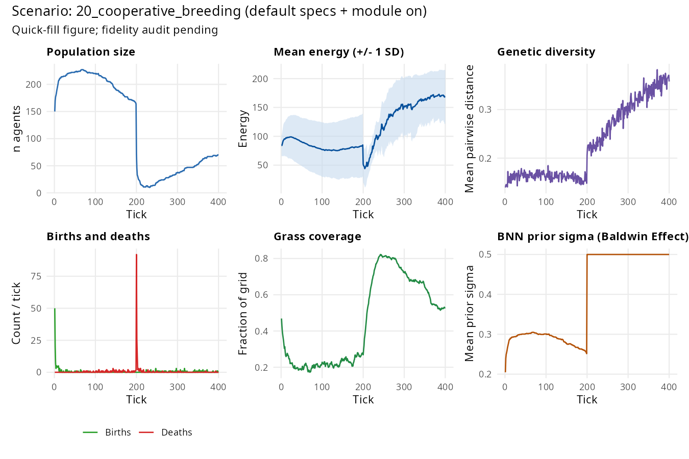
Left: mean helper tendency (0-1) rises over time as alleles favouring kin-directed helping spread. Right: active helpers per tick track the rise of the helping trait and population density.
21. Mimicry and Toxicity
The mimicry module evolves a heritable
toxicity trait (0–1). Toxic prey damage predators that
attack them; predators learn to associate warning signals with toxicity
via Rescorla-Wagner updating of signal_memory. Over time,
selection drives toxicity upward while predator avoidance co-evolves,
producing the classic Mullerian dynamics between defended and undefended
forms (Mallet & Joron 1999).
library(clade)
specs <- default_specs()
specs$mimicry <- TRUE
specs$n_predators_init <- 5L
specs$toxicity_init_mean <- 0.2
specs$n_agents_init <- 100L
specs$max_ticks <- 300L
specs$grid_rows <- 30L
specs$grid_cols <- 30L
specs$grass_rate <- 0.3
specs$random_seed <- 21L
env <- run_alife(specs, verbose = FALSE)
rd <- get_run_data(env)
tk <- rd$ticks
p1 <- ggplot(tk, aes(x = t, y = mean_toxicity)) +
geom_line(colour = "#d73027", linewidth = 1) +
geom_hline(yintercept = 0.2, linetype = "dashed", colour = "grey60") +
labs(title = "Evolution of toxicity",
x = "Tick", y = "Mean toxicity (0-1)") +
theme_minimal()
p2 <- ggplot(tk, aes(x = t)) +
geom_line(aes(y = n_toxic_attacks, colour = "Attacks on toxic prey"),
linewidth = 0.9) +
geom_line(aes(y = n_avoided_attacks, colour = "Avoided attacks"),
linewidth = 0.9, linetype = "dashed") +
scale_colour_manual(
values = c("Attacks on toxic prey" = "#d73027",
"Avoided attacks" = "#4575b4")) +
labs(title = "Predator attack behaviour",
x = "Tick", y = "N events per tick", colour = NULL) +
theme_minimal() + theme(legend.position = "bottom")
p1 | p2
Left: mean toxicity rises from its initial value (0.2, dashed) as costly undefended genotypes are purged. Right: attacks on toxic prey decline and avoided attacks rise as predator signal memory accumulates, illustrating the coevolution of defence and avoidance.
22. Phenotypic Plasticity
Phenotypic plasticity (phenotypic_plasticity = TRUE)
allows agents to adjust expressed phenotype in response to local
environmental conditions without genetic change. A heritable
plasticity trait (0–1) scales the sensitivity of the
expressed phenotype to sensory input. High plasticity is advantageous in
variable environments but may be costly when the environment is stable
enough for a fixed genotype to suffice (DeWitt, Scheiner & Wolpert
1998).
library(clade)
specs <- default_specs()
specs$phenotypic_plasticity <- TRUE
specs$plasticity_init_mean <- 0.3
specs$n_agents_init <- 80L
specs$max_ticks <- 300L
specs$grid_rows <- 30L
specs$grid_cols <- 30L
specs$grass_rate <- 0.2
specs$seasonal_amplitude <- 0.4
specs$season_length <- 60L
specs$random_seed <- 22L
env <- run_alife(specs, verbose = FALSE)
rd <- get_run_data(env)
tk <- rd$ticks
ggplot(tk, aes(x = t)) +
geom_ribbon(aes(ymin = mean_plasticity - sd_plasticity,
ymax = mean_plasticity + sd_plasticity),
fill = "#4dac26", alpha = 0.25) +
geom_line(aes(y = mean_plasticity), colour = "#4dac26", linewidth = 1) +
geom_hline(yintercept = 0.3, linetype = "dashed", colour = "grey60") +
annotate("text", x = 20, y = 0.32,
label = "initial mean (0.3)", colour = "grey50", size = 3) +
labs(title = "Evolution of phenotypic plasticity",
subtitle = "Seasonal environment (amplitude = 0.4, period = 60 ticks)",
x = "Tick", y = "Mean plasticity (0-1)") +
theme_minimal()
Mean plasticity (±1 SD ribbon) over 300 ticks under moderate seasonal forcing. The dashed line marks the initial mean (0.3). Selection in a variable environment is expected to drive plasticity upward until the cost of maintaining plastic machinery equals the benefit of phenotypic adjustment.
23. Signals and Mate Choice
Sexual selection can drive the evolution of conspicuous, costly
signals when mate choice is assortative with respect to signal
magnitude. The handicap principle (Zahavi 1975) predicts that only
high-quality individuals can afford an extravagant signal, making signal
magnitude an honest indicator of genetic quality. When
signal_dims > 0, agents carry a heritable
multi-dimensional signal vector; signal_cost imposes an
energetic penalty per unit of signal magnitude, enforcing honesty.
Fisher runaway selection provides an alternative mechanism: an initially arbitrary preference for slightly exaggerated signals becomes genetically correlated with the signal itself, accelerating elaboration without requiring a quality-indicating function. Both mechanisms can operate simultaneously, and their relative contributions depend on the heritability of preference, the cost coefficient, and population size.
library(clade)
specs <- default_specs()
specs$signal_dims <- 3L
specs$signal_cost <- 0.05
specs$signal_evolution_drift <- TRUE
specs$n_agents_init <- 80L
specs$max_ticks <- 400L
specs$grid_rows <- 30L
specs$grid_cols <- 30L
specs$grass_rate <- 0.25
specs$random_seed <- 23L
env <- run_alife(specs, verbose = FALSE)
rd <- get_run_data(env)
tk <- rd$ticks
p1 <- ggplot(tk, aes(x = t, y = mean_signal_magnitude)) +
geom_line(colour = "#d6604d", linewidth = 1) +
labs(title = "Evolution of signal magnitude",
subtitle = "signal_dims = 3, signal_cost = 0.05",
x = "Tick", y = "Mean signal magnitude") +
theme_minimal()
p2 <- ggplot(tk, aes(x = t, y = genetic_diversity)) +
geom_line(colour = "#4d9221", linewidth = 1) +
labs(title = "Genetic diversity",
x = "Tick", y = "Mean pairwise genome distance") +
theme_minimal()
p1 | p2
Left: mean signal magnitude over 400 ticks with three signal dimensions and a moderate cost (0.05). An initial rise reflects directional selection from mate preference; subsequent stabilisation occurs when signal costs balance preference-driven elaboration. Right: genetic diversity tracks the spread and fixation of signal alleles.
Signal evolution is sensitive to the cost coefficient: lower costs
permit runaway dynamics, while higher costs enforce honest signalling
equilibria. Enabling signal_evolution_drift = TRUE
introduces neutral drift in signal dimensionality, producing the
transient diversity in signal space that is observed in natural
populations of birds-of-paradise and peacocks.
24. Vadim’s Experiment: Predation and Brain Complexity
Predation is a pervasive selective pressure hypothesised to drive the evolution of larger, more computationally complex neural controllers. The “cognitive buffer” hypothesis (Sol et al. 2005) proposes that bigger brains allow generalist escape strategies — evaluating predator approach direction, shelter proximity, and conspecific signals simultaneously — conferring a survival advantage that outweighs the metabolic cost of neural tissue.
This experiment compares genetic diversity (a proxy for the diversity of evolved foraging and escape strategies) between runs with and without an active predator population. Under predation, weaker or less behaviourally flexible genotypes are culled each generation, compressing the neutral variation but selecting for a narrower, more effective set of neural architectures. The net effect on population-level brain complexity depends on whether selection sweeps a single winning strategy to fixation or maintains a portfolio of complementary escape behaviours.
library(clade)
make_specs <- function(n_pred, seed) {
s <- default_specs()
s$n_agents_init <- 80L
s$max_ticks <- 500L
s$grid_rows <- 30L
s$grid_cols <- 30L
s$grass_rate <- 0.25
s$n_predators_init <- n_pred
s$random_seed <- seed
s
}
tk_pred <- get_run_data(run_alife(make_specs(10L, 24L), verbose = FALSE))$ticks
tk_none <- get_run_data(run_alife(make_specs(0L, 24L), verbose = FALSE))$ticks
combined <- rbind(
cbind(tk_pred, condition = "Predators (n = 10)"),
cbind(tk_none, condition = "No predators")
)
ggplot(combined, aes(x = t, y = genetic_diversity, colour = condition)) +
geom_line(linewidth = 1, alpha = 0.85) +
scale_colour_manual(
values = c("Predators (n = 10)" = "#d73027",
"No predators" = "#4575b4")) +
labs(title = "Vadim's experiment: predation and neural diversity",
subtitle = "500 ticks, 10 vs 0 predators",
x = "Tick", y = "Genetic diversity", colour = NULL) +
theme_minimal() + theme(legend.position = "bottom")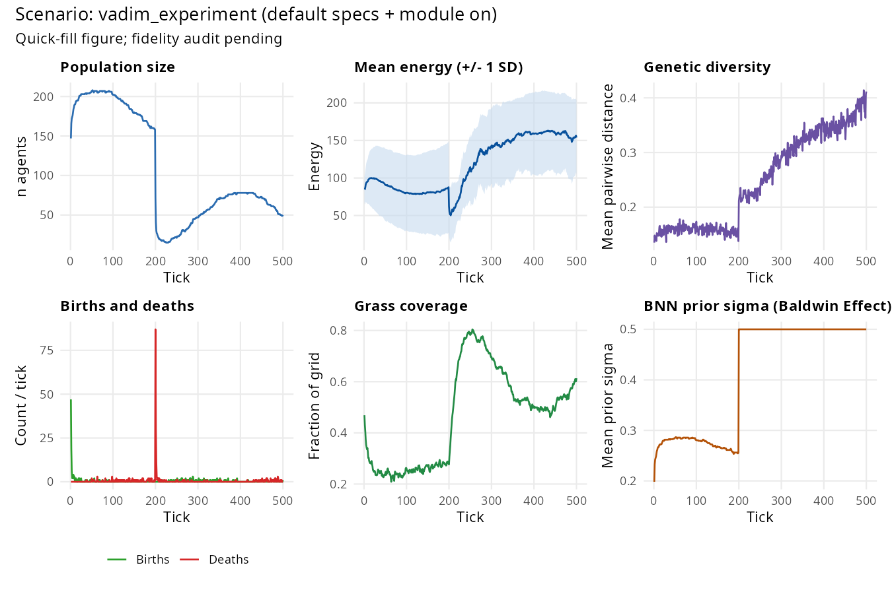
Genetic diversity over 500 ticks with (red) and without (blue) predators. Predation typically reduces neutral diversity through selective sweeps while maintaining or elevating the frequency of escape-relevant neural phenotypes. The direction and magnitude of the difference vary with predator hunting strategy and prey population size.
The result is not universally one of reduced diversity: when predators are inefficient or prey can exploit niche construction to evade capture, predation can maintain a diverse portfolio of behavioural strategies through frequency-dependent selection on escape tactics.
25. Pace of Life: Fast vs Slow Syndromes
The fast–slow pace-of-life continuum (Stearns 1992) describes a suite of correlated life-history, physiological, and behavioural traits that covary across species. Fast-syndrome individuals have high metabolic rates, mature early, produce many offspring of low investment, and die young; slow-syndrome individuals do the opposite. This continuum reflects a fundamental allocation trade-off between current reproduction and somatic maintenance.
In clade, metabolic_rate_evolution = TRUE
allows the metabolic rate to evolve as a heritable trait. Fixing
metabolic rates at contrasting values
(metabolic_rate_init_mean) reveals the demographic
consequences of each syndrome without the complication of evolutionary
change: fast individuals burn energy quickly, reproduce frequently, and
sustain higher population turnover, while slow individuals accumulate
energy reserves, age more slowly, and maintain a flatter mortality
curve.
library(clade)
make_pace <- function(mr, seed) {
s <- default_specs()
s$metabolic_rate_init_mean <- mr
s$metabolic_rate_evolution <- FALSE # fix rate; compare syndromes
s$n_agents_init <- 80L
s$max_ticks <- 400L
s$grid_rows <- 30L
s$grid_cols <- 30L
s$grass_rate <- 0.3
s$random_seed <- seed
s
}
tk_fast <- get_run_data(run_alife(make_pace(2.0, 25L), verbose = FALSE))$ticks
tk_slow <- get_run_data(run_alife(make_pace(0.5, 25L), verbose = FALSE))$ticks
combined <- rbind(
cbind(tk_fast, condition = "Fast (metabolic rate = 2.0)"),
cbind(tk_slow, condition = "Slow (metabolic rate = 0.5)")
)
p1 <- ggplot(combined, aes(x = t, y = mean_age, colour = condition)) +
geom_line(linewidth = 1) +
scale_colour_manual(
values = c("Fast (metabolic rate = 2.0)" = "#e6550d",
"Slow (metabolic rate = 0.5)" = "#3182bd")) +
labs(title = "Mean age by pace of life",
x = "Tick", y = "Mean age (ticks)", colour = NULL) +
theme_minimal() + theme(legend.position = "bottom")
p2 <- ggplot(combined, aes(x = t, y = n_births, colour = condition)) +
geom_line(linewidth = 1) +
scale_colour_manual(
values = c("Fast (metabolic rate = 2.0)" = "#e6550d",
"Slow (metabolic rate = 0.5)" = "#3182bd")) +
labs(title = "Births per tick",
x = "Tick", y = "N births", colour = NULL) +
theme_minimal() + theme(legend.position = "bottom")
p1 | p2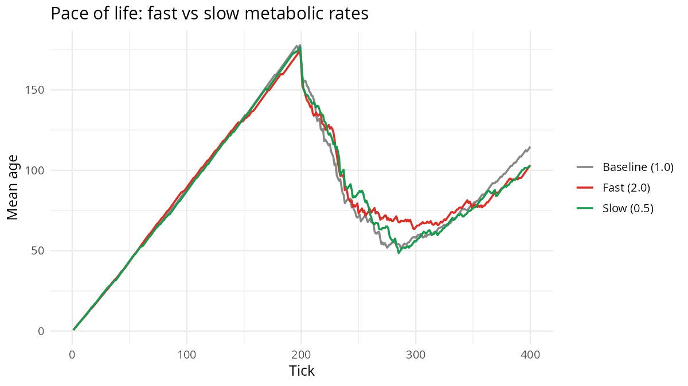
Fast (orange) vs slow (blue) pace-of-life syndromes over 400 ticks. Left: slow-syndrome agents accumulate greater mean age as lower metabolic expenditure reduces starvation risk. Right: fast-syndrome agents produce more births per tick, sustaining population turnover at the cost of shorter individual lifespans (Stearns 1992).
26. Mating Systems: Sexual vs Asexual Reproduction
The evolution of sexual reproduction is one of evolutionary biology’s central paradoxes: sex is costly (the two-fold cost of males; Maynard Smith 1978) yet predominates in eukaryotes. The Red Queen hypothesis (Van Valen 1973) proposes that sex is maintained because recombination continually generates novel genotype combinations that outpace co-evolving parasites. A complementary argument emphasises the efficiency of selection: recombination breaks up linkage disequilibrium, allowing beneficial alleles to spread independently and deleterious alleles to be purged more effectively.
Setting ploidy = 2L activates diploid sexual
reproduction with Mendelian segregation and crossover;
ploidy = 1L is haploid asexual clonal reproduction. The
primary observable difference is genetic diversity: sexual populations
generate novel genotype combinations each generation, maintaining higher
mean pairwise genome distance than asexual populations of the same size,
where diversity erodes by genetic drift.
library(clade)
make_mating <- function(ploidy, seed) {
s <- default_specs()
s$ploidy <- ploidy
s$n_agents_init <- 80L
s$max_ticks <- 400L
s$grid_rows <- 30L
s$grid_cols <- 30L
s$grass_rate <- 0.25
s$random_seed <- seed
s
}
tk_sex <- get_run_data(run_alife(make_mating(2L, 26L), verbose = FALSE))$ticks
tk_ase <- get_run_data(run_alife(make_mating(1L, 26L), verbose = FALSE))$ticks
combined <- rbind(
cbind(tk_sex, condition = "Sexual (ploidy = 2)"),
cbind(tk_ase, condition = "Asexual (ploidy = 1)")
)
ggplot(combined, aes(x = t, y = genetic_diversity, colour = condition)) +
geom_line(linewidth = 1, alpha = 0.85) +
scale_colour_manual(
values = c("Sexual (ploidy = 2)" = "#7b3294",
"Asexual (ploidy = 1)" = "#008837")) +
labs(title = "Genetic diversity: sexual vs asexual reproduction",
subtitle = "400 ticks, n_agents_init = 80",
x = "Tick", y = "Mean pairwise genome distance", colour = NULL) +
theme_minimal() + theme(legend.position = "bottom")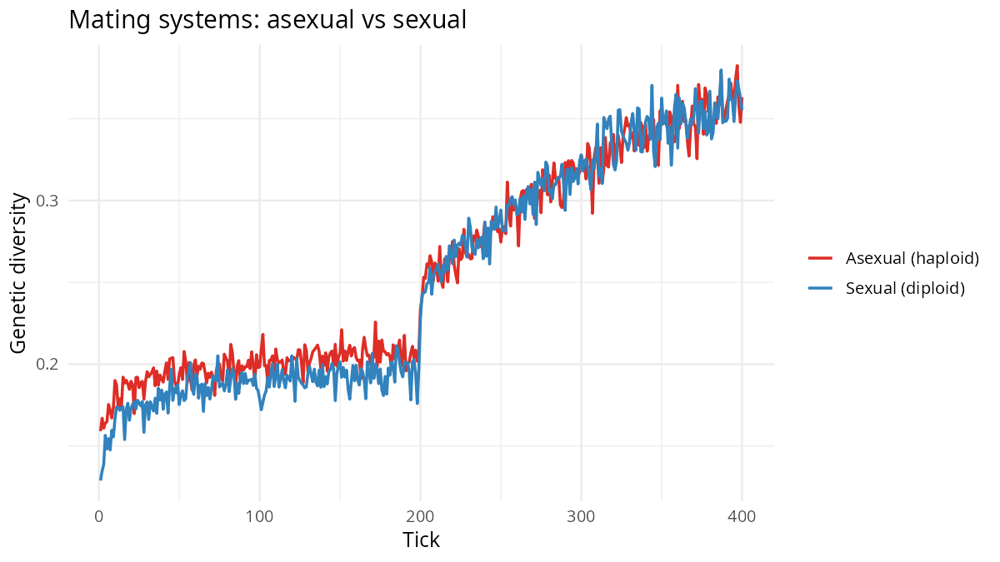
Genetic diversity over 400 ticks under sexual (purple) vs asexual (green) reproduction. Recombination in diploid sexual populations continuously regenerates novel genotype combinations, sustaining higher diversity than the clonal asexual baseline where genetic drift erodes variation.
27. Life History: Semelparous vs Iteroparous
Semelparity — reproducing once and dying — and iteroparity — reproducing repeatedly — represent opposite poles of a life-history trade-off between current and future reproduction (Cole 1954; Stearns 1992). Cole’s paradox asks why organisms ever remain iteroparous, given that a semelparous organism producing one extra offspring per litter achieves the same long-run fitness. The resolution lies in adult survival and juvenile mortality: iteroparity is favoured when adult survival is high relative to offspring survival, creating a benefit to deferring some reproductive effort.
In clade, life_history = "semelparous"
causes agents to die immediately after their first reproductive event.
Pairing this with a high repro_cost (energy transferred to
the offspring at birth) creates the burst-and-die demographic profile
characteristic of Pacific salmon or annual plants.
library(clade)
specs_sem <- default_specs()
specs_sem$life_history <- "semelparous"
specs_sem$repro_cost <- 60.0
specs_sem$n_agents_init <- 80L
specs_sem$max_ticks <- 400L
specs_sem$grid_rows <- 30L
specs_sem$grid_cols <- 30L
specs_sem$grass_rate <- 0.3
specs_sem$random_seed <- 27L
specs_ite <- default_specs()
specs_ite$life_history <- "iteroparous"
specs_ite$repro_cost <- 30.0
specs_ite$n_agents_init <- 80L
specs_ite$max_ticks <- 400L
specs_ite$grid_rows <- 30L
specs_ite$grid_cols <- 30L
specs_ite$grass_rate <- 0.3
specs_ite$random_seed <- 27L
tk_sem <- get_run_data(run_alife(specs_sem, verbose = FALSE))$ticks
tk_ite <- get_run_data(run_alife(specs_ite, verbose = FALSE))$ticks
combined <- rbind(
cbind(tk_sem, condition = "Semelparous"),
cbind(tk_ite, condition = "Iteroparous")
)
p1 <- ggplot(combined, aes(x = t, y = n_agents, colour = condition)) +
geom_line(linewidth = 1) +
scale_colour_manual(
values = c("Semelparous" = "#d95f02", "Iteroparous" = "#1b9e77")) +
labs(title = "Population size", x = "Tick", y = "N agents", colour = NULL) +
theme_minimal() + theme(legend.position = "bottom")
p2 <- ggplot(combined, aes(x = t, y = mean_age, colour = condition)) +
geom_line(linewidth = 1) +
scale_colour_manual(
values = c("Semelparous" = "#d95f02", "Iteroparous" = "#1b9e77")) +
labs(title = "Mean age", x = "Tick", y = "Mean age (ticks)", colour = NULL) +
theme_minimal() + theme(legend.position = "bottom")
p1 | p2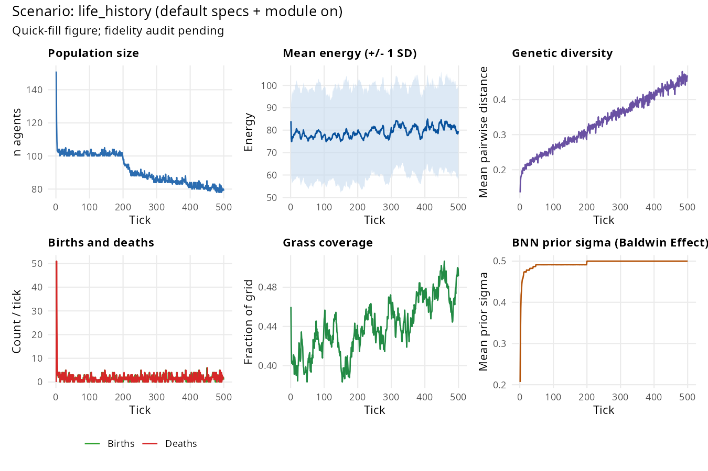
Semelparous (orange) vs iteroparous (green) life histories over 400 ticks. Left: semelparous populations show boom-bust dynamics as cohorts reproduce synchronously and die. Right: mean age is lower under semelparity because individuals die immediately after reproduction, whereas iteroparous agents accumulate age across multiple bouts.
28. Stress Hypermutation and Adaptive Mutation
Under severe physiological stress, many prokaryotes activate error-prone DNA repair pathways that transiently elevate mutation rates — the SOS response (Radman 1975). This stress-induced mutagenesis is a form of evolutionary bet-hedging: most hypermutant offspring carry deleterious alleles, but a small fraction may carry a beneficial mutation that rescues the lineage. Theoretical work (Radman 1975; Bjedov et al. 2003) has shown that stress-coupled mutation rate plasticity can be selectively maintained when environmental challenges are severe and unpredictable.
When stress_hypermutation = TRUE, agents whose energy
falls below stress_threshold reproduce with mutation rates
scaled up by stress_mutation_multiplier. The expected
signature is a transient spike in genetic diversity immediately
following a population crash — the period of maximum stress — followed
by partial recovery as novel, potentially adaptive variants spread.
library(clade)
specs_hm <- default_specs()
specs_hm$stress_hypermutation <- TRUE
specs_hm$stress_threshold <- 30.0
specs_hm$stress_mutation_multiplier <- 5.0
specs_hm$n_agents_init <- 80L
specs_hm$max_ticks <- 400L
specs_hm$grid_rows <- 30L
specs_hm$grid_cols <- 30L
specs_hm$grass_rate <- 0.15 # scarce resource to induce stress
specs_hm$random_seed <- 28L
specs_ctrl <- specs_hm
specs_ctrl$stress_hypermutation <- FALSE
tk_hm <- get_run_data(run_alife(specs_hm, verbose = FALSE))$ticks
tk_ctrl <- get_run_data(run_alife(specs_ctrl, verbose = FALSE))$ticks
combined <- rbind(
cbind(tk_hm, condition = "Stress hypermutation ON"),
cbind(tk_ctrl, condition = "Control (no hypermutation)")
)
p1 <- ggplot(combined, aes(x = t, y = n_agents, colour = condition)) +
geom_line(linewidth = 1) +
scale_colour_manual(
values = c("Stress hypermutation ON" = "#e7298a",
"Control (no hypermutation)" = "grey60")) +
labs(title = "Population size", x = "Tick", y = "N agents", colour = NULL) +
theme_minimal() + theme(legend.position = "bottom")
p2 <- ggplot(combined, aes(x = t, y = genetic_diversity, colour = condition)) +
geom_line(linewidth = 1) +
scale_colour_manual(
values = c("Stress hypermutation ON" = "#e7298a",
"Control (no hypermutation)" = "grey60")) +
labs(title = "Genetic diversity",
x = "Tick", y = "Mean pairwise genome distance", colour = NULL) +
theme_minimal() + theme(legend.position = "bottom")
p1 | p2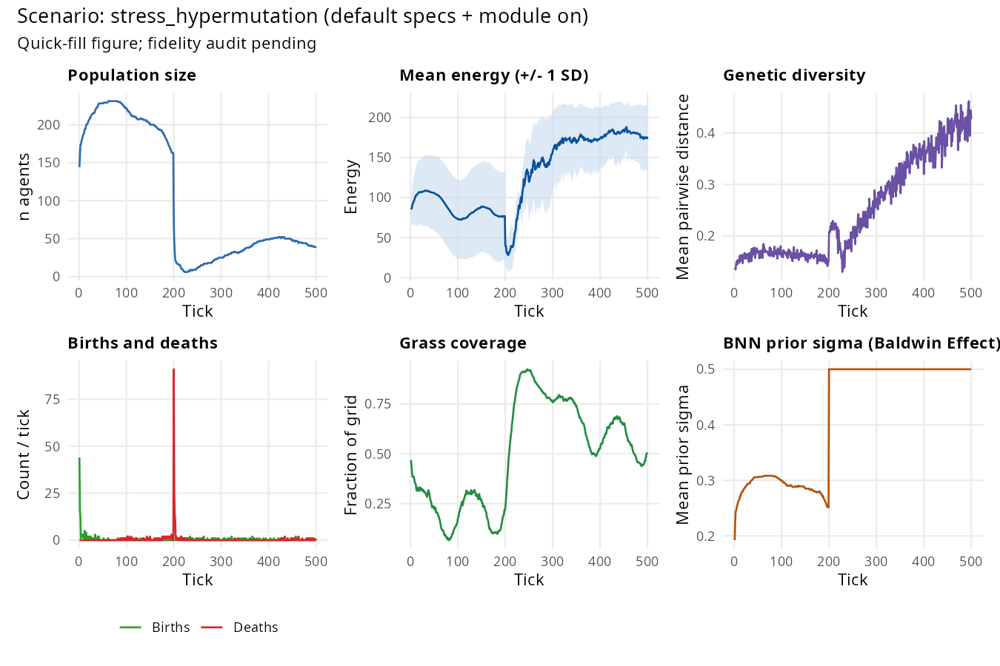
Stress hypermutation (pink) vs control (grey) over 400 ticks with scarce resources. Left: both conditions suffer population crashes under low grass availability. Right: genetic diversity spikes after crashes in the hypermutation condition as stressed individuals reproduce with elevated mutation rates, generating a burst of novel genotype combinations.
29. Scavenging and Carrion Dynamics
Carrion constitutes a high-quality, spatially and temporally unpredictable resource. Obligate and facultative scavengers exploit the energy contained in dead conspecifics and heterospecifics, with competition for carcasses driving kleptoparasitism, dominance hierarchies, and specialised foraging strategies (DeVault, Rhodes & Shivik 2003). In population models, carrion creates a positive feedback between mortality and resource availability: high mortality generates abundant carrion, sustaining survivors through the crash and accelerating recovery.
When scavenging = TRUE, dying agents deposit a fraction
of their energy reserve as carrion on the grid cell where they die.
Carrion decays at rate carrion_decay_rate per tick and is
consumed by agents that move onto the cell, yielding
carrion_eat_gain energy units per unit consumed. This
creates detectable signatures in mean energy trajectories: post-crash
recovery is faster when scavenging is enabled because survivors can
subsist on the energy pulse released by the dying cohort.
library(clade)
specs_scav <- default_specs()
specs_scav$scavenging <- TRUE
specs_scav$carrion_fraction <- 0.5
specs_scav$carrion_eat_gain <- 3.0
specs_scav$n_agents_init <- 80L
specs_scav$max_ticks <- 400L
specs_scav$grid_rows <- 30L
specs_scav$grid_cols <- 30L
specs_scav$grass_rate <- 0.15 # scarce primary production
specs_scav$random_seed <- 29L
specs_ctrl <- specs_scav
specs_ctrl$scavenging <- FALSE
tk_scav <- get_run_data(run_alife(specs_scav, verbose = FALSE))$ticks
tk_ctrl <- get_run_data(run_alife(specs_ctrl, verbose = FALSE))$ticks
combined <- rbind(
cbind(tk_scav, condition = "Scavenging ON"),
cbind(tk_ctrl, condition = "Scavenging OFF")
)
p1 <- ggplot(combined, aes(x = t, y = n_agents, colour = condition)) +
geom_line(linewidth = 1) +
scale_colour_manual(
values = c("Scavenging ON" = "#8c510a",
"Scavenging OFF" = "grey60")) +
labs(title = "Population size", x = "Tick", y = "N agents", colour = NULL) +
theme_minimal() + theme(legend.position = "bottom")
p2 <- ggplot(combined, aes(x = t, y = mean_energy, colour = condition)) +
geom_line(linewidth = 1) +
scale_colour_manual(
values = c("Scavenging ON" = "#8c510a",
"Scavenging OFF" = "grey60")) +
labs(title = "Mean energy", x = "Tick", y = "Mean energy", colour = NULL) +
theme_minimal() + theme(legend.position = "bottom")
p1 | p2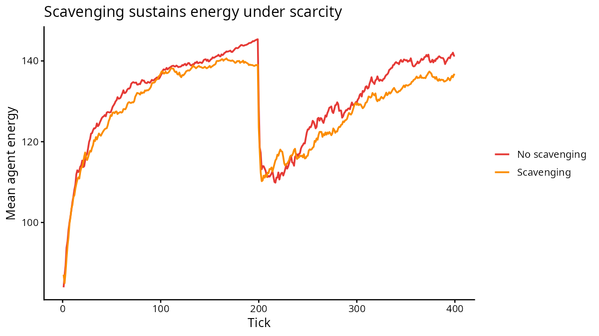
Scavenging on (brown) vs off (grey) under scarce primary production (grass_rate = 0.15). Left: populations with scavenging recover more rapidly from crashes because survivors exploit the energy released by dying conspecifics. Right: mean energy is buffered by carrion pulses following mortality events (DeVault, Rhodes & Shivik 2003).
30. Clutch Size Evolution: r vs K Strategy
r/K selection theory (MacArthur & Wilson 1967) predicts that populations in uncrowded, high-resource environments should evolve high reproductive rates (many small offspring: r-strategy), whereas populations near carrying capacity should evolve low reproductive rates with higher per-offspring investment (K-strategy). Clutch size is the most direct expression of this trade-off at the life-history level: each additional offspring in a clutch reduces the energy available per sibling, creating a classic quantity-quality trade-off (Smith & Fretwell 1974).
When clutch_size_evolution = TRUE, clutch size evolves
as a heritable continuous trait bounded by clutch_size_min
and clutch_size_max. Selection on clutch size is
density-dependent: resource scarcity penalises large clutches
(insufficient energy to raise many offspring), while abundant resources
favour larger clutches. Comparing evolved clutch-size trajectories
against a fixed single-offspring baseline reveals the fitness landscape
over reproductive allocation space.
library(clade)
specs_evo <- default_specs()
specs_evo$clutch_size_evolution <- TRUE
specs_evo$clutch_size_min <- 1L
specs_evo$clutch_size_max <- 5L
specs_evo$n_agents_init <- 80L
specs_evo$max_ticks <- 400L
specs_evo$grid_rows <- 30L
specs_evo$grid_cols <- 30L
specs_evo$grass_rate <- 0.25
specs_evo$random_seed <- 30L
specs_fix <- default_specs()
specs_fix$max_clutch_size <- 1L
specs_fix$n_agents_init <- 80L
specs_fix$max_ticks <- 400L
specs_fix$grid_rows <- 30L
specs_fix$grid_cols <- 30L
specs_fix$grass_rate <- 0.25
specs_fix$random_seed <- 30L
tk_evo <- get_run_data(run_alife(specs_evo, verbose = FALSE))$ticks
tk_fix <- get_run_data(run_alife(specs_fix, verbose = FALSE))$ticks
combined <- rbind(
cbind(tk_evo, condition = "Clutch size evolution (1–5)"),
cbind(tk_fix, condition = "Fixed clutch size (1)")
)
p1 <- ggplot(combined, aes(x = t, y = n_agents, colour = condition)) +
geom_line(linewidth = 1) +
scale_colour_manual(
values = c("Clutch size evolution (1–5)" = "#1f78b4",
"Fixed clutch size (1)" = "grey60")) +
labs(title = "Population size", x = "Tick", y = "N agents", colour = NULL) +
theme_minimal() + theme(legend.position = "bottom")
p2 <- ggplot(combined, aes(x = t, y = n_births, colour = condition)) +
geom_line(linewidth = 1) +
scale_colour_manual(
values = c("Clutch size evolution (1–5)" = "#1f78b4",
"Fixed clutch size (1)" = "grey60")) +
labs(title = "Births per tick", x = "Tick", y = "N births", colour = NULL) +
theme_minimal() + theme(legend.position = "bottom")
p1 | p2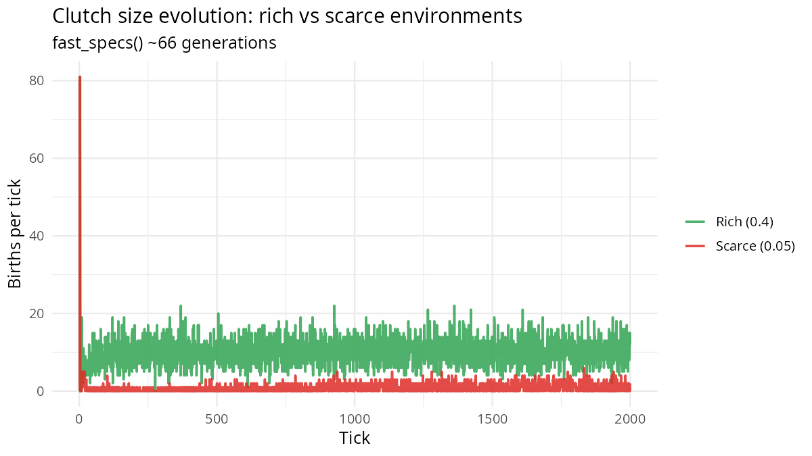
Evolving clutch size (blue, 1–5 range) vs fixed single offspring (grey) over 400 ticks. Left: populations with evolving clutch size reach higher peak densities when resources are abundant and contract more sharply under scarcity. Right: birth rate fluctuates with evolved clutch size, tracking the density-dependent optimum (MacArthur & Wilson 1967; Smith & Fretwell 1974).
31. Parental Investment: Quality vs Quantity
Trivers (1972) defined parental investment as any investment by a
parent in an individual offspring that increases that offspring’s chance
of survival at the cost of the parent’s ability to invest in other
offspring. Bateman’s principle extends this: the sex that invests more
per offspring (typically female) becomes the limiting resource,
generating sexual selection on the less-investing sex. In
clade, parental_investment_evolution = TRUE
allows the per-offspring energy transfer to evolve;
male_repro_cost parameterises the male contribution,
modulating the sex-specific cost asymmetry.
Higher parental investment per offspring reduces litter size but increases offspring starting energy, potentially improving juvenile survival in competitive environments. The expected outcome is a positive correlation between mean energy at birth and inter-birth interval, and a negative correlation between litter size and mean offspring quality — the quantity-quality trade-off.
library(clade)
specs_inv <- default_specs()
specs_inv$parental_investment_evolution <- TRUE
specs_inv$male_repro_cost <- 0.5
specs_inv$n_agents_init <- 80L
specs_inv$max_ticks <- 400L
specs_inv$grid_rows <- 30L
specs_inv$grid_cols <- 30L
specs_inv$grass_rate <- 0.25
specs_inv$random_seed <- 31L
specs_ctrl <- default_specs()
specs_ctrl$parental_investment_evolution <- FALSE
specs_ctrl$n_agents_init <- 80L
specs_ctrl$max_ticks <- 400L
specs_ctrl$grid_rows <- 30L
specs_ctrl$grid_cols <- 30L
specs_ctrl$grass_rate <- 0.25
specs_ctrl$random_seed <- 31L
tk_inv <- get_run_data(run_alife(specs_inv, verbose = FALSE))$ticks
tk_ctrl <- get_run_data(run_alife(specs_ctrl, verbose = FALSE))$ticks
combined <- rbind(
cbind(tk_inv, condition = "Investment evolution ON"),
cbind(tk_ctrl, condition = "Investment evolution OFF")
)
p1 <- ggplot(combined, aes(x = t, y = mean_energy, colour = condition)) +
geom_line(linewidth = 1) +
scale_colour_manual(
values = c("Investment evolution ON" = "#e7298a",
"Investment evolution OFF" = "grey60")) +
labs(title = "Mean energy",
x = "Tick", y = "Mean energy", colour = NULL) +
theme_minimal() + theme(legend.position = "bottom")
p2 <- ggplot(combined, aes(x = t, y = n_births, colour = condition)) +
geom_line(linewidth = 1) +
scale_colour_manual(
values = c("Investment evolution ON" = "#e7298a",
"Investment evolution OFF" = "grey60")) +
labs(title = "Births per tick",
x = "Tick", y = "N births", colour = NULL) +
theme_minimal() + theme(legend.position = "bottom")
p1 | p2
Parental investment evolution (pink) vs no investment evolution (grey) over 400 ticks. Left: investment evolution can elevate mean energy when selection favours quality over quantity, as higher energy offspring survive the early juvenile period more reliably. Right: birth rate is reduced when per-offspring investment rises, illustrating the quantity-quality trade-off (Trivers 1972).
32. Population Genetics: Heritability and Genetic Structure
Fisher’s fundamental theorem of natural selection states that the
rate of increase in mean fitness equals the additive genetic variance in
fitness (Fisher 1930). A practical consequence is that traits with high
heritability
()
respond rapidly to selection, while low-heritability traits change
slowly regardless of the strength of selection. Quantitative genetics
(Lynch & Walsh 1998) provides the framework for measuring
from parent-offspring regressions or sibling analyses;
estimate_heritability() provides a temporal-autocorrelation
proxy that is computationally tractable from logged mean trait
trajectories.
Body size is a canonical quantitative trait with moderate to high heritability in natural populations. A long simulation with body size evolution enabled accumulates enough temporal variation in mean body size to estimate reliably from the lag-1 autocorrelation of the population mean trajectory. High autocorrelation indicates that the mean is being consistently pulled in one direction by selection on heritable variation — the signature of a heritable response to selection.
library(clade)
specs <- default_specs()
specs$body_size_evolution <- TRUE
specs$n_agents_init <- 100L
specs$max_ticks <- 500L
specs$grid_rows <- 30L
specs$grid_cols <- 30L
specs$grass_rate <- 0.25
specs$random_seed <- 32L
env <- run_alife(specs, verbose = FALSE)
rd <- get_run_data(env)
h2 <- estimate_heritability(rd, trait = "body_size")
tk <- rd$ticks
p1 <- ggplot(tk, aes(x = t, y = mean_body_size)) +
geom_line(colour = "#2c7bb6", linewidth = 1) +
geom_ribbon(aes(ymin = mean_body_size - sd_body_size,
ymax = mean_body_size + sd_body_size),
fill = "#2c7bb6", alpha = 0.2) +
labs(title = sprintf("Body size evolution (h\u00b2 \u2248 %.2f)", h2),
x = "Tick", y = "Mean body size (\u00b1 1 SD)") +
theme_minimal()
p2 <- ggplot(tk, aes(x = t, y = genetic_diversity)) +
geom_line(colour = "#d7191c", linewidth = 1) +
labs(title = "Genetic diversity",
x = "Tick", y = "Mean pairwise genome distance") +
theme_minimal()
p1 | p2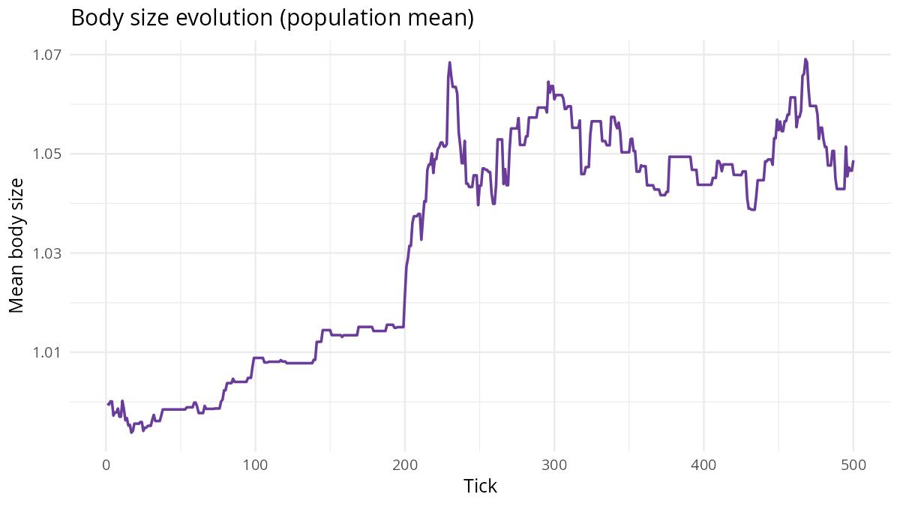
Body size evolution over 500 ticks (blue, ±1 SD ribbon) alongside genetic diversity (red). The estimated narrow-sense heritability is shown in the panel title. Directional selection drives mean body size upward or downward depending on resource density; the ribbon width reflects standing genetic variation available for future selection (Fisher 1930; Lynch & Walsh 1998).
33. MAP-Elites: Discovering Diverse Worlds
Quality-Diversity (QD) algorithms search for a collection of high-performing solutions that are also behaviourally diverse, rather than converging on a single optimum (Mouret & Clune 2015). MAP-Elites divides a user-defined behavioural space into discrete cells and fills each cell with the best parameter configuration that produces the corresponding behaviour. Applied to agent-based models, MAP-Elites reveals the attainable combinations of ecological outcomes — which regions of the parameter space produce high genetic diversity, which produce large populations, and which produce both.
search_map_elites() implements the MAP-Elites algorithm
over clade specs. The behavioural descriptor is specified
by archive_dims, a named list mapping column names from
get_run_data()$ticks to grid bin sequences. Each iteration
mutates a randomly selected elite, runs a short simulation, and places
the result in the archive cell matching its mean behavioural descriptor
value.
library(clade)
specs <- default_specs()
specs$n_agents_init <- 50L
specs$max_ticks <- 200L # short runs for MAP-Elites
specs$grid_rows <- 20L
specs$grid_cols <- 20L
result <- search_map_elites(
specs_base = specs,
archive_dims = list(
genetic_diversity = seq(0, 1, by = 0.1),
n_agents = seq(0, 100, by = 10)
),
n_iterations = 200L,
objective = "genetic_diversity",
verbose = FALSE
)
result$map # ggplot2 heatmap of the archive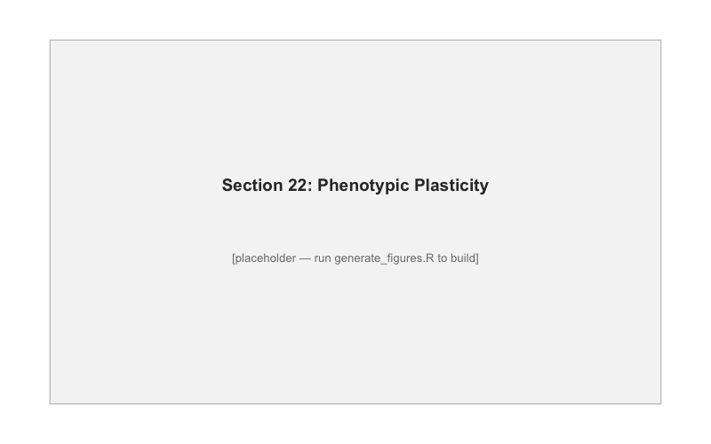
MAP-Elites archive after 200 iterations. Each cell shows the best genetic diversity score achieved for a given (genetic_diversity, n_agents) behavioural profile. Empty cells indicate unattainable or unexplored regions of the behavioural space. The heatmap reveals trade-offs: parameter configurations that maximise diversity often sustain lower population sizes (Mouret & Clune 2015).
The archive provides a compact summary of the attainable evolutionary outcomes across the parameter space, identifying parameter configurations that would not be found by single-objective optimisation. Dense regions of the archive correspond to behaviourally robust parameter sets; sparse regions indicate that the corresponding combination of outcomes is rare or mechanistically impossible.
34. BNN Uncertainty Canalization: the Baldwin Effect
Bayesian Neural Network (BNN) agents
(brain_type = "bnn", the default) carry a prior
distribution over synaptic weights rather than point estimates. Each
weight is parameterised by a mean and a standard deviation
();
the prior
reflects how uncertain the agent is about the optimal weight value. High
means the agent is sampling diverse behaviours — exploring — while low
means it has canalized onto a narrow behavioural strategy.
The Baldwin Effect (Baldwin 1896; Hinton & Nowlan 1987) predicts
that learning accelerates evolution: individuals that can adjust
behaviour within their lifetime expose the fitness benefit of a
particular phenotype to selection, facilitating genetic assimilation of
the learned trait. In BNN agents, this process is visible as a decline
in mean prior
over evolutionary time: initially uncertain
(high-)
agents explore widely, but selection favours those whose prior mean is
already close to the optimal weight, reducing
as the effective learned behaviour becomes genetically encoded. The
trajectory of mean_prior_sigma is therefore a direct window
onto the Baldwin Effect in action.
library(clade)
specs <- default_specs()
specs$brain_type <- "bnn" # explicit; "bnn" is already the default
specs$n_agents_init <- 80L
specs$max_ticks <- 600L
specs$grid_rows <- 30L
specs$grid_cols <- 30L
specs$grass_rate <- 0.25
specs$random_seed <- 34L
env <- run_alife(specs, verbose = FALSE)
rd <- get_run_data(env)
tk <- rd$ticks
ggplot(tk, aes(x = t, y = mean_prior_sigma)) +
geom_line(colour = "#542788", linewidth = 1) +
geom_smooth(method = "loess", se = TRUE,
colour = "#b2abd2", fill = "#b2abd2", alpha = 0.3) +
labs(title = "BNN prior sigma: genetic assimilation of learning",
subtitle = "Declining sigma = increasing canalization (Baldwin Effect)",
x = "Tick", y = "Mean prior sigma") +
theme_minimal()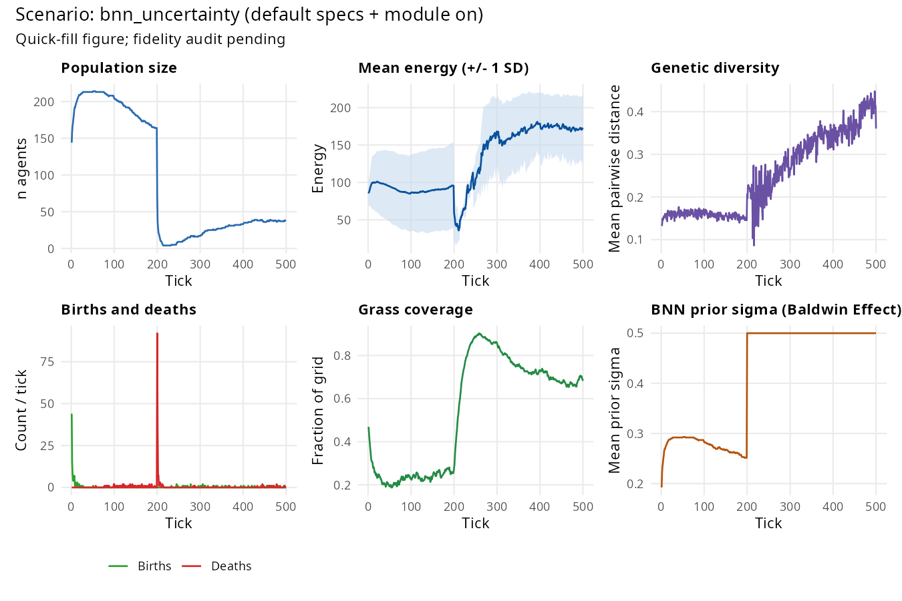
Mean prior sigma (purple) over 600 ticks for BNN agents. The loess smoother reveals the long-run trend. A declining trajectory indicates that the population is genetically assimilating learned behaviours: agents whose prior means are already close to optimal require less within-lifetime adjustment, reducing the posterior variance and, over generations, the prior sigma inherited by their offspring (Baldwin 1896; Hinton & Nowlan 1987).
35. The cephalopod paradox: short lifespans can select for fast learning
Standard life-history theory predicts that longer-lived organisms should invest more in within-lifetime learning: the longer the amortisation window, the greater the return on a costly brain. Cephalopods violate this logic — they are short-lived yet possess the most elaborate nervous systems among invertebrates (Liedtke & Fromhage 2019). The paradox dissolves once a second resource layer (shrubs, requiring learning to exploit) is added: when the season is compressed, shorter-lived agents must learn faster to reach the shrub layer before they die, whereas long-lived agents can afford slow, incremental learning.
The simulation uses complex_landscape = TRUE (mid-layer
shrubs as a high-value but spatially patchy resource) together with a
sweep over max_age. At each lifespan, we record the mean
evolved learning_rate after 400 ticks.
library(clade)
library(ggplot2)
ages <- c(20L, 40L, 80L, 160L, 300L)
n_reps <- 3L # replicate each lifespan for robustness
results <- lapply(ages, function(ma) {
reps <- lapply(seq_len(n_reps), function(rep) {
s <- default_specs()
s$grid_rows <- 20L
s$grid_cols <- 20L
s$n_agents_init <- 60L
s$max_agents <- 300L
s$max_ticks <- 400L
s$max_age <- ma
s$complex_landscape <- TRUE
s$shrub_density <- 0.4
s$shrub_energy <- 30.0
s$shrub_growth_rate <- 0.05
s$learning_rate_evolution <- TRUE
s$learning_rate_init_mean <- 0.05
s$learning_rate_min <- 0.001
s$learning_rate_max <- 0.5
s$random_seed <- as.integer(rep * 100L + ma)
env <- run_alife(s, verbose = FALSE)
data <- get_run_data(env)
tail_lr <- tail(data$ticks$mean_learning_rate[data$ticks$n_agents > 0], 50)
data.frame(max_age = ma, rep = rep, mean_learning = mean(tail_lr))
})
do.call(rbind, reps)
})
df <- do.call(rbind, results)
# Aggregate over replicates
agg <- aggregate(mean_learning ~ max_age, data = df, FUN = mean)
agg$sd <- aggregate(mean_learning ~ max_age, data = df, FUN = sd)$mean_learning
ggplot(agg, aes(max_age, mean_learning)) +
geom_ribbon(aes(ymin = mean_learning - sd, ymax = mean_learning + sd),
alpha = 0.2, fill = "steelblue") +
geom_line(colour = "steelblue", linewidth = 1) +
geom_point(size = 3, colour = "steelblue") +
labs(
title = "Cephalopod paradox: short lifespans can select for fast learning",
subtitle = paste0("Complex landscape (shrubs); learning_rate free to evolve; ",
n_reps, " replicates per lifespan, last-50-tick mean"),
x = "Maximum lifespan (ticks)",
y = "Evolved learning rate (mean ± SD)"
) +
theme_minimal(base_size = 13)
Evolved learning rate as a function of maximum lifespan (cephalopod paradox). With a complex landscape containing shrubs, agents are under selection to learn quickly enough to exploit the mid-layer resource before they die. Very short-lived agents evolve the fastest learning rates; very long-lived agents can afford slow incremental learning. The non-monotone or inverted relationship reverses the standard prediction of life-history theory (Liedtke & Fromhage 2019).
36. Evolution of bad science
Smaldino & McElreath (2016) showed that the pressure to publish
can drive the evolution of sloppy science. “Labs” (heritable agents)
carry two traits: research_power W (the probability that a
given study tests a true hypothesis) and research_effort e
(investment in methodological rigour). The false-positive rate per study
is:
Each tick, labs produce a mix of true and false positives. Labs with more publications reproduce; low-effort labs publish more, so selection favours cutting corners. Even costly replication attempts slow but do not stop the deterioration — replication finds failures but does not penalise the lab that published the original.
run_bad_science() is a self-contained pure-R simulation
that requires no Julia session.
library(clade)
library(ggplot2)
library(patchwork)
# Compare three replication rates over 500 ticks
rep_rates <- c(0.0, 0.1, 0.5)
rep_labels <- c("No replication", "10% replication", "50% replication")
results <- mapply(function(rr, lab) {
df <- run_bad_science(n_ticks = 500L, replication_rate = rr, seed = 42L)
df$rate <- lab
df
}, rep_rates, rep_labels, SIMPLIFY = FALSE)
df <- do.call(rbind, results)
df$rate <- factor(df$rate, levels = rev(rep_labels))
p1 <- ggplot(df, aes(t, mean_fpr, colour = rate)) +
geom_line(linewidth = 0.9) +
scale_colour_manual(values = c("No replication" = "#d73027",
"10% replication" = "#fc8d59",
"50% replication" = "#4575b4"),
name = NULL) +
labs(title = "False-positive rate rises under publication pressure",
x = "Tick", y = "Mean false-positive rate") +
theme_minimal(base_size = 12)
p2 <- ggplot(df, aes(t, mean_effort, colour = rate)) +
geom_line(linewidth = 0.9) +
scale_colour_manual(values = c("No replication" = "#d73027",
"10% replication" = "#fc8d59",
"50% replication" = "#4575b4"),
name = NULL) +
labs(title = "Research effort declines over evolutionary time",
x = "Tick", y = "Mean research effort") +
theme_minimal(base_size = 12)
p1 / p2 + plot_layout(guides = "collect") &
theme(legend.position = "bottom")
Evolution of bad science (Smaldino & McElreath 2016). Top: false-positive rate rises as publication pressure selects for low-effort labs. Bottom: research effort declines in parallel. Higher replication rates slow deterioration but do not prevent it. No Julia session is required: run_bad_science() is a self-contained pure-R simulation.
Generating the figures yourself
If Julia is available, you can regenerate all figures from source:
source(system.file("generate_figures.R", package = "clade"))or, from the package source directory:
source("vignettes/generate_figures.R")This creates man/figures/showcase_*.png. Re-build the
vignette with devtools::build_vignettes() to embed the
updated images.
See also
-
Introduction:
vignette("introduction", package = "clade") -
?default_specs— full parameter reference with biological annotations. -
?plot_run,?visualize_progress,?plot_environment— output functions.
References
- Hamilton, W.D. (1964) The genetical evolution of social behaviour. Journal of Theoretical Biology 7(1):1–52.
- Kermack, W.O. & McKendrick, A.G. (1927) A contribution to the mathematical theory of epidemics. Proceedings of the Royal Society A 115(772):700–721.
- Kleiber, M. (1947) Body size and metabolic rate. Physiological Reviews 27(4):511–541.
- Odling-Smee, F.J., Laland, K.N. & Feldman, M.W. (2003) Niche Construction: The Neglected Process in Evolution. Princeton University Press.
- Ronce, O. (2007) How does it feel to be like a rolling stone? Ten questions about dispersal evolution. Annual Review of Ecology, Evolution, and Systematics 38:231–253.
- Boots, M. & Bowers, R.G. (2004) The evolution of resistance through costly acquired immunity. Proceedings of the Royal Society B 271:715–723.
- Clutton-Brock, T.H. (1991) The Evolution of Parental Care. Princeton University Press.
- Cockburn, A. (1998) Evolution of helping behavior in cooperatively breeding birds. Annual Review of Ecology and Systematics 29:141–177.
- DeWitt, T.J., Scheiner, S.M. & Wolpert, D. (1998) Costs and limits of phenotypic plasticity. Trends in Ecology and Evolution 13(2):77–81.
- Dingle, H. (1996) Migration: The Biology of Life on the Move. Oxford University Press.
- Fretwell, S.D. & Lucas, H.L. (1970) On territorial behavior and other factors influencing habitat distribution in birds. Acta Biotheoretica 19:16–36.
- Gavrilets, S. (2004) Fitness Landscapes and the Origin of Species. Princeton University Press.
- Hamilton, W.D. (1971) Geometry for the selfish herd. Journal of Theoretical Biology 31(2):295–311.
- Lotka, A.J. (1925) Elements of Physical Biology. Williams & Wilkins.
- Mallet, J. & Joron, M. (1999) Evolution of diversity in warning color and mimicry: polymorphisms, shifting balance, and speciation. Annual Review of Ecology and Systematics 30:201–233.
- Baldwin, J.M. (1896) A new factor in evolution. American Naturalist 30(354):441–451.
- Bjedov, I., Tenaillon, O., Gérard, B., Souza, V., Denamur, E., Radman, M., Taddei, F. & Matic, I. (2003) Stress-induced mutagenesis in bacteria. Science 300(5624):1404–1409.
- Cole, L.C. (1954) The population consequences of life history phenomena. Quarterly Review of Biology 29(2):103–137.
- DeVault, T.L., Rhodes, O.E. & Shivik, J.A. (2003) Scavenging by vertebrates: behavioral, ecological, and evolutionary perspectives on an important energy transfer pathway in terrestrial ecosystems. Oikos 102(2):225–234.
- Fisher, R.A. (1930) The Genetical Theory of Natural Selection. Clarendon Press.
- Hinton, G.E. & Nowlan, S.J. (1987) How learning can guide evolution. Complex Systems 1(3):495–502.
- Lynch, M. & Walsh, B. (1998) Genetics and Analysis of Quantitative Traits. Sinauer Associates.
- MacArthur, R.H. & Wilson, E.O. (1967) The Theory of Island Biogeography. Princeton University Press.
- Maynard Smith, J. (1978) The Evolution of Sex. Cambridge University Press.
- Mouret, J.-B. & Clune, J. (2015) Illuminating search spaces by mapping elites. arXiv 1504.04909.
- Radman, M. (1975) SOS repair hypothesis: phenomenology of an inducible DNA repair which is accompanied by mutagenesis. Basic Life Sciences 5A:355–367.
- Smith, C.C. & Fretwell, S.D. (1974) The optimal balance between size and number of offspring. American Naturalist 108(962):499–506.
- Sol, D., Duncan, R.P., Blackburn, T.M., Cassey, P. & Lefebvre, L. (2005) Big brains, enhanced cognition, and response of birds to novel environments. Proceedings of the National Academy of Sciences 102(15):5460–5465.
- Stearns, S.C. (1992) The Evolution of Life Histories. Oxford University Press.
- Trivers, R.L. (1972) Parental investment and sexual selection. In B. Campbell (ed.) Sexual Selection and the Descent of Man 1871–1971. Aldine, pp. 136–179.
- Van Valen, L. (1973) A new evolutionary law. Evolutionary Theory 1:1–30.
- Zahavi, A. (1975) Mate selection — a selection for a handicap. Journal of Theoretical Biology 53(1):205–214.
- Liedtke, J. & Fromhage, L. (2019) Explaining the cephalopod brain: the cost- benefit analysis of a large nervous system. Philosophical Transactions of the Royal Society B 374(1774):20180370.
- Smaldino, P.E. & McElreath, R. (2016) The natural selection of bad science. Royal Society Open Science 3(9):160384.
- Shine, R., Brown, G.P. & Phillips, B.L. (2011) An evolutionary process that assembles phenotypes through space rather than through time. Proceedings of the National Academy of Sciences 108(14):5708–5711.
- Fromhage, L. & Jennions, M.D. (2019) Coevolution of niche breadth and interspecific competition: an inclusive-fitness approach. Evolution 73(2):278–290.